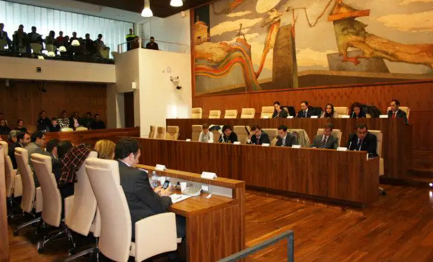

Bienvenidos al Juzgado de Familia
Aviso Importante
Este sitio web ha sido desarrollado exclusivamente con fines educativos como parte de un proyecto académico realizado en el marco del curso de desarrollo web de Coderhouse. El mismo utiliza como referencia el nombre del "Juzgado de Familia" únicamente a modo ilustrativo para la práctica de diseño, maquetación y programación de páginas web. En consecuencia, el presente sitio no corresponde a una página institucional real, ni se encuentra vinculado de ninguna manera con el Poder Judicial ni con ningun Juzgado de Familia ubicado en Lanús o en Buenos Aires. Toda la información publicada aquí carece de validez oficial y no debe ser considerada como fuente de información jurídica, institucional o administrativa. Asimismo, los nombres, textos, descripciones, credenciales, noticias, convenios y demás contenidos incluidos en el sitio han sido generados exclusivamente con fines demostrativos y de práctica, en muchos casos mediante herramientas de inteligencia artificial. Por lo tanto, cualquier similitud con personas, instituciones o situaciones reales es meramente casual y no intencional.